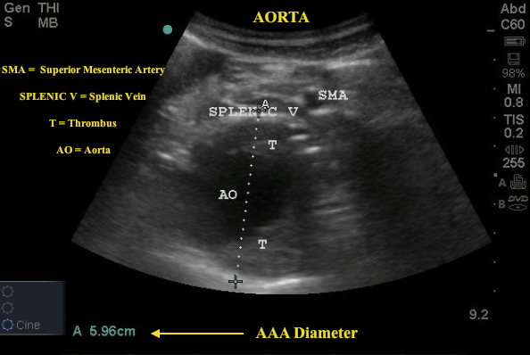
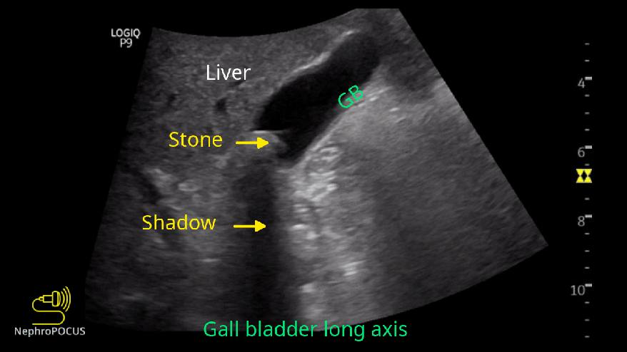
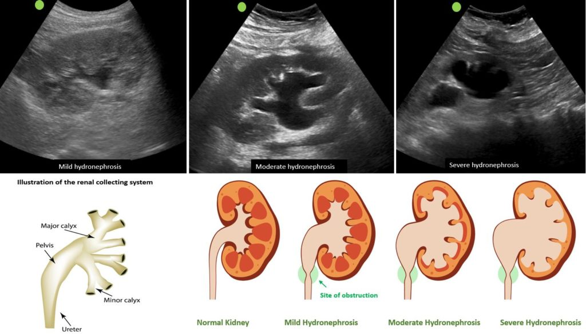

AAA POCUS has near-100% sensitivity when performed by a trained provider. Any diameter ≥3 cm is aneurysmal. Repair threshold: ≥5.5 cm (men), ≥5.0 cm (women). Symptomatic or ruptured AAA requires emergent surgical consultation regardless of size.
Do not delay surgery to characterize a ruptured AAA by CT. Hypotensive patient + back/flank pain + AAA on POCUS = vascular surgery NOW, OR immediately. Free fluid with AAA = ruptured until proven otherwise. The POCUS binary answer you need: is this >5 cm or not?
| Diameter | Classification | Management |
|---|---|---|
| <3.0 cm | Normal | Surveillance if risk factors |
| 3.0–4.4 cm | Small AAA | Surveillance q12 months |
| 4.5–5.4 cm | Medium AAA | Surveillance q6 months; surgical referral |
| ≥5.5 cm (men) / ≥5.0 cm (women) | Large — repair threshold | Elective repair; urgent if symptomatic |
| Any + hypotension + pain | Ruptured / Symptomatic | Emergent surgical consultation. OR immediately. |

| Finding | Description | Significance |
|---|---|---|
| Gallstones | Hyperechoic foci in GB lumen with posterior acoustic shadow. Move with gravity (position change). | Cholelithiasis. If in cystic duct: obstruction. |
| Wall thickening | GB wall >3 mm (fasting patient) | Cholecystitis, hepatitis, hypoalbuminemia, ascites, CHF can all thicken wall. Specificity increased by Murphy’s sign. |
| Sonographic Murphy’s | Maximum tenderness directly under probe with GB on screen | Sn 63–86%, Sp 93–97% for acute cholecystitis when combined with gallstones. |
| Pericholecystic fluid | Anechoic fluid around GB | Acute cholecystitis, perforation risk |
| CBD dilation | CBD >6 mm (>8 mm post-cholecystectomy). Measured at hepatic hilum. | Biliary obstruction (stone, stricture, mass). Rough guide: CBD mm ≤ age/10. |
| Sludge | Echogenic, non-shadowing material layering dependently in GB | Biliary stasis. No acoustic shadow distinguishes from stones. |


| Finding | Normal | Appendicitis |
|---|---|---|
| Outer diameter | <6 mm | ≥6 mm outer-wall-to-outer-wall |
| Compressibility | Compressible with gentle pressure | Non-compressible, point tenderness |
| Color Doppler | Minimal flow | Hyperemia of wall (increased flow) |
| Periappendiceal fat | Normal echogenicity | Hyperechoic (fat stranding) |
| Appendicolith | Absent | Hyperechoic with shadow within lumen |
LUS sensitivity for appendicitis ~75–90%, operator-dependent. A non-visualized appendix with high clinical suspicion requires CT. Sensitivity decreases with obesity, retroileal appendix, and bowel gas.